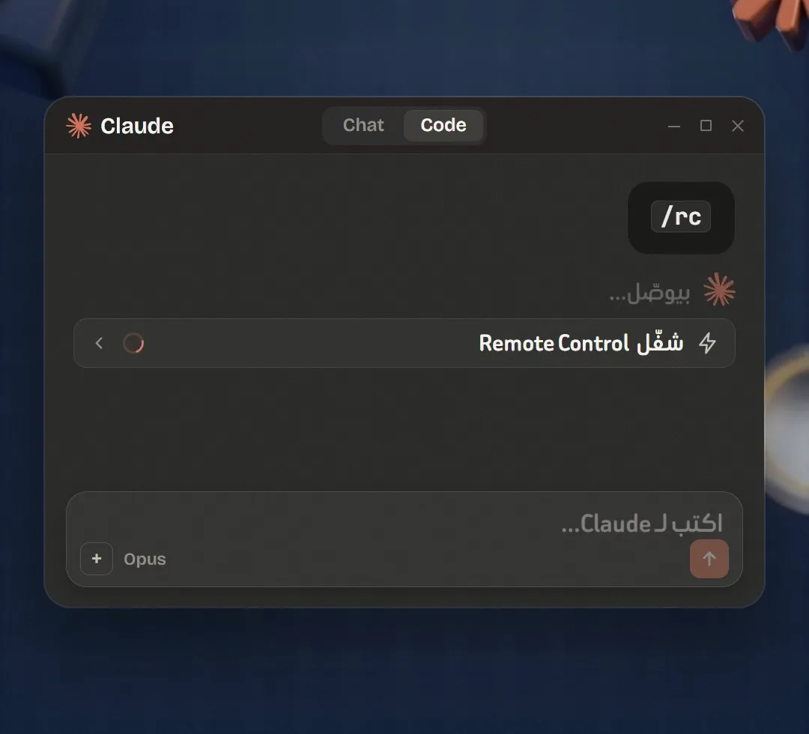
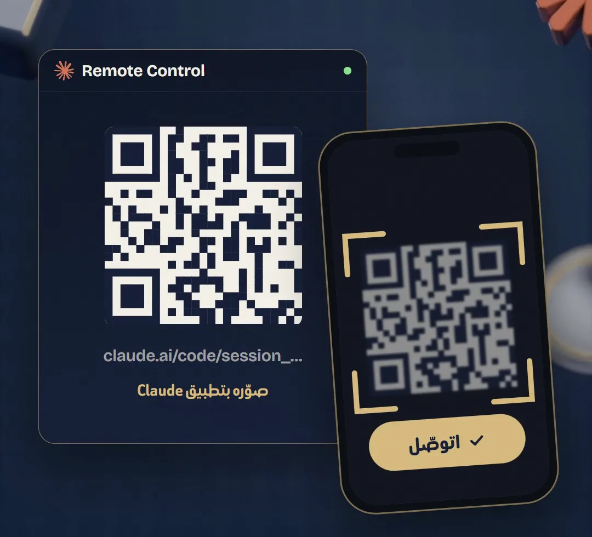
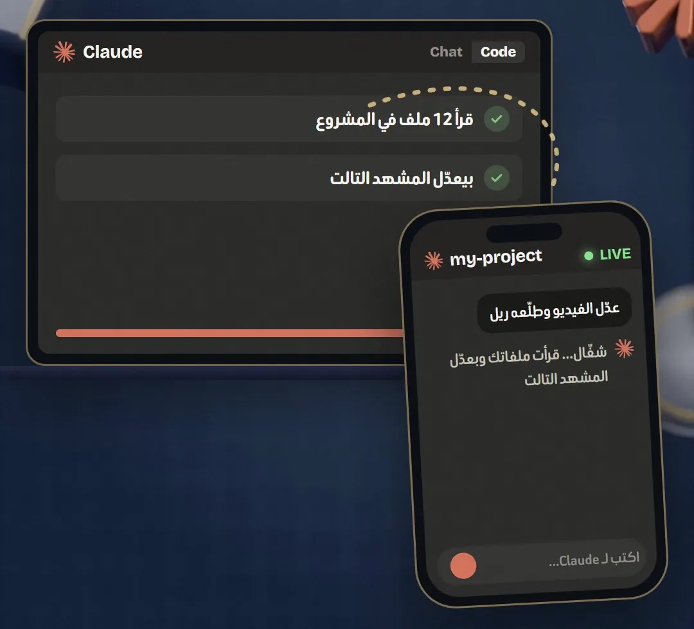
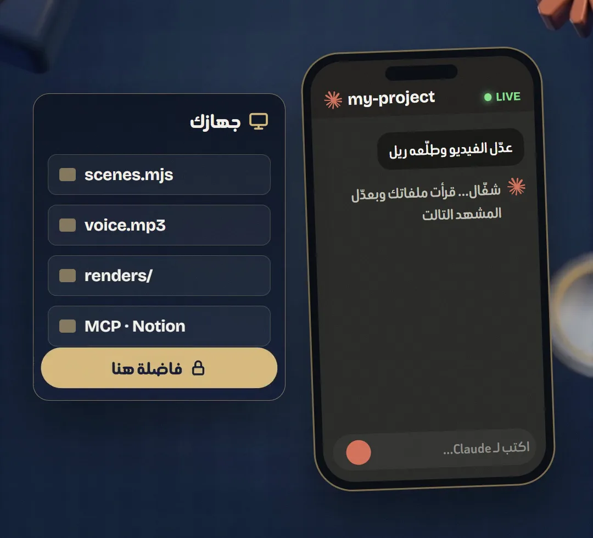

كمّل شغــل Claude Codeمن موبايلـــك
Remote Control في Claude Code بتخليك تبدأ الشغل على الكمبيوتر وتكمّله من موبايلك أو من أي متصفح. Claude فاضل شغال على جهازك، والملفات والأدوات والـ MCP فاضلين عندك، والموبايل مجرد شباك على نفس الجلسة. آخر تحديث ليها نزل في Claude Code يوم 9 نوفمبر 2026.


قبل ما تبدأ
محتاج اشتراك Pro أو Max أو Ultra أو Team أو Enterprise (مش شغالة بـ API key). في Team وEnterprise لازم الـ Owner يفعّل Remote Control من إعدادات Claude Code الأول. واتأكد إنك عامل تسجيل دخول في Claude Code بحساب claude.ai.
الشرح الرسمي من Anthropic ↗- 01
اكتب الأمر
افتح Claude Code (في تطبيق Claude على الكمبيوتر تاب Code، أو VS Code، أو أي مكان بتستخدمه فيه) واكتب الأمر ده في خانة الكتابة. هيشغّل Remote Control على نفس المحادثة اللي إنت فيها.
/rc
تكتب /rc في Claude Code، فيشغّل Remote Control على نفس الجلسة - 02
صوّر الـ QR
هيطلعلك رابط وQR. صوّر الـ QR بكاميرا الموبايل يفتحلك الجلسة في تطبيق Claude، أو افتح الرابط من أي متصفح. ولو مش عندك التطبيق، اكتب /mobile في Claude Code يطلعلك QR لصفحة التحميل.

الـ QR على الكمبيوتر، والموبايل بيصوّره ويتوصّل - 03
كمّل من الموبايل
دلوقتي تقدر تكتب لـ Claude من الموبايل أو من الكمبيوتر، والمحادثة متزامنة على الاتنين. تقدر كمان تبعت صورة أو ملف من الموبايل. الجلسة هتلاقيها في قايمة الجلسات بنقطة خضرا لما تكون أونلاين.

نفس الشغل اللي على اللابتوب ظاهر LIVE على الموبايل - 04
ملفاتك فاضلة عندك
الكود والملفات وكل حاجة بتتنفّذ على جهازك إنت، مش على السحابة. عشان كده الكمبيوتر لازم يفضل شغال، ولو قفلت Claude Code الجلسة بتقف. ولو النت فصل أو الجهاز نام، بيرجع يوصل لوحده أول ما يصحى.

الموبايل مجرد شباك، والملفات فاضلة على جهازك - 05
خليها شغالة على طول
لو عايز كل جلسة تتفتح وفيها Remote Control من غير ما تكتب /rc كل مرة، اكتب الأمر ده في Claude Code وفعّل «Enable Remote Control for all sessions». ولما تخلص، اكتب /rc تاني عشان تقفلها.
/config
نصايح صغيرة
- كل جلسة Claude Code تقبل اتصال Remote Control واحد بس.
- سجل المحادثة بيتخزن على سيرفرات Anthropic عشان يفضل متزامن، بس التنفيذ والملفات على جهازك.
عايز حد يعملهولك؟
مش فاضي تتعلم وتعمل بنفسك؟ أنا بعمل ريلز لبراندك بنفس الطريقة اللي بشرحها هنا.